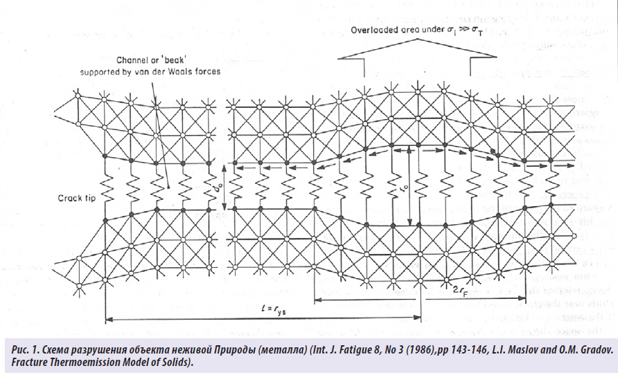

Известное философское выражение «ничто не вечно под Луной» настраивает человека, как правило, на лирический лад, заставляя думать о бренности и зачастую о бессмысленности его жизни.
Однако такое суждение не может быть однозначным, хотя бы потому, что Природа как объект изучения, состоящая, по понятиям человечества, из объектов неживой и живой материи, не настолько изучена, чтобы понять единство Мира или Пространства, в котором по Воле Бога оказался человек!

Более того, и сам человек как энергоинформационный объект Космического Пространства и в наши дни остаётся для людей столь же загадочным, что и тысячелетия назад, несмотря на грандиозные успехи науки и технологии. Поэтому слова Создателя: «Человек ещё не известен человечеству» - лучше всего подтверждают сложившуюся ситуацию в мире естествоиспытателей.
Из наиболее интересующих людей вопросов, конечно, выделяются вопросы сроков жизни всех природных (живых) и искусственных (технических) объектов, включая и самого человека. Процессы накопления повреждений, а значит - процессы усталости или старения (в биологии), относимые к классу САМОПРОИЗВОЛЬНЫХ процессов, могут быть изучены с помощью моделей нелинейной неравновесной термодинамики.
Явление высокой общности
Здесь следует отметить, что все процессы в природе и технике можно разделить на два обширных класса - самопроизвольные и вынужденные (протекающие принудительно)! Очень важно отметить, что все САМОПРОИЗВОЛЬНЫЕ процессы сопровождаются диссипацией (рассеиванием) энергии.
Можно предварительно сказать, что долговечность технических объектов, как и сама человеческая жизнь, является САМОПРОИЗВОЛЬНО протекающим диссипативным процессом, тогда теорию и математический аппарат диссипативной термодинамики можно применить для описания общих закономерностей Природы, включая накопление повреждений в технических объектах или заболеваний, а значит - накопление искажений в биологических объектах (в человеческой жизни).
Можно сказать, описывая поведение технических объектов и параллельно человеческую жизнь, что первопричиной разрушения или старения, включая и смерть как Природное явление, является САМОПРОИЗВОЛЬНЫЙ процесс диссипации (рассеивания) энергии, под воздействием энергоинформационных потоков как внутреннего, так и внешнего толка.
Поскольку долговечность технического объекта и срок человеческой жизни (да и вообще любого биологического объекта) удовлетворяет принципу кратчайшего времени, то приходит понимание того, что сроки эксплуатации или продолжительность жизни ЗАРАНЕЕ ПРЕДОПРЕДЕЛЕНЫ и ЗАДАНЫ НЕИЗВЕСТНЫМ физиологическим или биофизическим механизмом (назовём это Создателем) сразу после рождения (или даже в период беременности)! Возникает естественный вопрос: возможен ли и при каких условиях контролируемый переход с одной траектории на другую в целях продления срока эксплуатации технического объекта и продления активного периода жизни самого человека?
В свою очередь, несмотря на то, что человеческая жизнь как процесс САМОПРОИЗВОЛЬНЫЙ, сроки которого определены Создателем, тем не менее требует нашего личного участия, ибо без понимания Единых закономерностей Природы срок жизни является неопределённой величиной.
Тогда, в случае проявления попытки физического омоложения (продления срока жизни), такой процесс должен рассматриваться как принудительный, и для его осуществления должна быть затрачена определённая или дополнительная РАБОТА.
Иными словами, принимая лечение как процесс, на который тратится собственная энергия (работа) человека, нужно понимать, что лечение обходится человеку собственным здоровьем!
Материя, энергия, информация
Необходимо отметить, что современная наука ещё с времён Декарта, Лейбница, Ньютона провозгласила, что критерием ИСТИНЫ может быть только эксперимент, главным требованием к которому является полная воспроизводимость результата независимо от места, времени и личности экспериментатора. Можно сколько угодно спорить, но в Природе одновременно существуют три фундаментальные сущности: Материя, Энергия и Информация!
Следует отметить, что если Материя и Энергия доступны нашему восприятию, контролю и измерению, то Информация нематериальна по природе, а значит, по представлениям научного мира, на неё не распространяются физические законы сохранения энергии и вещества. Однако не существует никаких запретов на принципиальную возможность взаимодействия Информации с Материей и Со-Знанием.
Наука наконец признала, что для всего живого необходимо не только элементальное, но и тонкополевое (информационное) питание, являющееся важнейшим фактором зарождения и существования жизни. Организм человека и среда его обитания (Природа) являются единым целым, что обуславливает их взаимное влияние друг на друга.
«Чем больше наука делает открытий в физическом мире, тем больше мы приходим к выводам, которые можно разрушить только Верой», - считал Альберт Эйнштейн.
Человечество не имеет права отказываться от мысли о целесообразности всего существующего на Планете и особенно человека как примера Великого порядка, поэтому главной целью, по словам Кеплера, всех исследований внешнего мира (Космоса) должно быть открытие рациональности Высшего порядка или Гармонии, которую Бог ниспослал не только Миру людей, но и Природе, включающей в себя её неживую часть!
Все фундаментальные научные исследования Природы и Мироздания говорят или подтверждают, что это именно так. Тогда присутствие человека в Пространстве КОСМОСА должно характеризоваться ЕДИНЫМИ с Пространством Канонами Природы, выраженными через информацию и энергию!
Необходимо помнить, что физическими законами может быть описана не только неживая Природа, но и сам человек как часть Целого, и важнейшими из них должны считаться законы термодинамики, где Первый закон является законом сохранения энергии (информации), определяющим возникновение живой материи (человека), которая не может возникнуть само по себе из ничего и без помощи Создателя.
Если же принять во внимание исторический опыт человечества, то возникновение жизни человека должно, прежде всего, вписываться в условия Высшего порядка Мироздания, а с учётом того, что человек - мыслящая живая Сущность, состоящая из миллиардов тоже мыслящих клеток, сам человек должен представлять собой Великую Гармонию этого клеточного (микрокосмического) пространства!
Тайна человеческой клетки
За последние десятилетия учёные-биохимики, раскрывая ТАЙНУ человеческой клетки, пришли к единому выводу, что это совершенство Природы - человеческая клетка - может быть создана только как результат Высшего Творения!
Отталкиваясь от клетки, как от Высшего ЕДИНИЧНОГО фрактального микроподобия Мира Разума, можно с уверенностью сказать, что учёные, а за ними и всё человечество, обязательно придут к пониманию Божественного происхождения всего сущего ( живого и неживого) на Планете.
В наших исследованиях Природы и самоорганизации клеток человека мы исходили из постулата, базировавшегося на научных исследованиях о том, что живые организмы на Планете, включая и человека как Высшее СОВЕРШЕНСТВО Природы, есть биологическая форма существования Разума, в виде многомерного и многоуровневого ЕДИНОГО клеточного Пространства, а значит - материей, энергией и информацией, объединённых Едиными Канонами Космоса.
Исходя из этого, Холдингом НИИ «Здоровьесберегающих технологий» была поставлена задача изучения перераспределения энергии и информации в экстремальных условиях разрушения (или смерти) как отдельной клетки живой, так и атомной структуры неживой материи (металла), как части Целого, подчиняющейся канонам Мироздания.
Парацельс говорил: «Счастье человека в нём самом, а не в звёздах: он зачат вместе с ними и вырастает в утробе матери. Но, несмотря на это, он знает о гармонии между макрокосмосом и микрокосмосом».
Анализируя процесс разрушения объектов живой и неживой Природы, мы давно пришли к убеждению (на базе широкого круга экспериментальных данных), что все они сопровождаются выбросом (диссипацией) энергии и информации в космическое пространство из локальной зоны разрыва связей на уровне молекул или атомов!
В данном случае (рис. 1) при разрушении металлического образца (твёрдого тела) при достижении разрушающей нагрузки величины, равной скрытой теплоте плавления, выделялась (рассеивалась) накопленная энергия в виде:
- ионной эмиссии;
- электронной эмиссии;
- электромагнитного излучения;
- упругой волны напряжений (акустической эмиссии);
- тепловой энергии.
Нами было установлено, что в условиях, когда происходит разрушение клетки человека, накопленная при жизни человека энергия, а самое главное, накопленная внешняя информация (человеческий жизненный промысел), выделяются, а значит происходит процесс диссипации (рассеивания) энергии в виде:
- электромагнитного излучения;
- упругой волны напряжений (акустической эмиссии);
- тепловой энергии.
Предполагаем, из-за трудностей эксперимента с кровью человека в вакуумной установке, что ионная и электронная эмиссии тоже, как и в твёрдом теле, должны быть при разрушении клетки человека, которая, как утверждают учёные, обладает разумом, позволяющим ей (клетке) принимать самостоятельное и взвешенное решение!
Известно, что на здоровье отражается воздействие социально-психологических условий жизни, работы, а также морально-этическое состояние общества. Перед нами стояли две основные задачи: увеличение индивидуальной продолжительности жизни, её качества и увеличение видовой продолжительности жизни (россиян в целом).
Процессы единого энергообмена
Биохимик В. Энгельгард тоже представлял нашу жизнь как единство трёх потоков - материи, энергии и информации. Система саморегуляции психической энергии заключена в обратной связи человека с окружающим миром (Природой), суть которой определяется Законами Ноосферы по Вернадскому, когда действие равно противодействию, осуществляемому через единство информационного поля человека и Вселенной!
Единство процессов диссипации энергии при разрушении (смерти) объектов как неживой, так и живой Природы говорит, прежде всего, о Единстве Мира, в котором кто-то очень опрометчиво разделил Целое на отдельные и независимые части!
Понимание ЕДИНСТВА Природы крайне необходимо, ибо современная наука практически остановилась в своём развитии, не позволяя человеку заглянуть в Великий КОСМОС, останавливая его не только в средствах передвижения, но, самое главное, и в понимании того, что же собой представляет Великое ЦЕЛОЕ!
Как ни парадоксально это звучит, но сама наука, не имеющая чётких представлений о Пространстве, о Великом Начале Начал, стала тормозом прогресса Со-Знания человека, отдав этот принципиальный вопрос на растерзание религиозным, очень часто псевдонаучным, представлениям.
Прежде всего, следует отметить, что все процессы, происходящие в КОСМОСЕ, на Планете, в самом человеке, в его клеточном пространстве (в отдельной клетке), являются процессами Единого энергообмена и, конечно, перераспределения информационных потоков, ибо Пространство, вне зависимости от масштаба, является ЕДИНЫМ, называемым Сферой Разума, или Ноосферой!
Мы все находимся в этом «бульоне Разума», подвергаясь воздействию не только Великих Ритмов Вечности или Планетарных ритмов, но ритмов (более низких частот) человечества, народов и своих родов. Как самый чувствительный инструмент биологического проявления Высшего Разума люди имеют возможность не только чувствовать наличие или отсутствие Великой Гармонии Вечности, но и реагировать на эти ритмы, изменяя или приспосабливая свои гармоники к внешнему информационному воздействию. Следует помнить, что как часть Единого информационного поля мы в состоянии и управлять этими информационными потоками, если не на Планетарном уровне, то на уровне Народа и родов - безусловно!
Поэтому, масштабируя человеческие возможности по управлению информационными потоками, можно сразу определиться, что наша адекватная реакция на внешнее (Космическое или Планетарное) воздействие определяет не только срок нашей жизни, но и эволюцию Со-Знания как части Великого Космоса.
Реакция же клетки человека, рассматриваемой нами как «маленький человечек», находящийся в информационном поле «человечества» (человека), абсолютно точно определяет продолжительность жизни, вероятность проявления болезни (внутреннего НЕСОВЕРШЕНСТВА) и возможность её излечения.
Поэтому если и говорить о медицине современного человечества, то, в соответствии со Словами Создателя об энергоинформационном Единстве Целого и его частей, медицина и любые технологии неживой Природы, по существу, сводятся к управлению информационными потоками, как на уровне человека, на уровне человеческой клетки, так и объектов неживой Природы - повторяю, части Великого Целого!
Управление энергоинформационными потоками
Значит, медицина будущего должна быть технологией контроля и управления информационными потоками, и как результат - управления потоками перераспределения энергии, ибо, как показали результаты скрининга, затраты человеком РАБОТЫ на приём и переработку информации лекарственных препаратов, во многих случаях являются невосполнимой потерей внутренней энергии, что подтверждает тезис Пирогова о том, что лечение есть поражение медицины!
Наша главнейшая задача - научиться измерять, контролировать и управлять энергоинформационными потоками, понимая, что человек и его клетки являются не только приёмниками внешнего информационного поля, но ответными передатчиками этих вибраций высоких и низких частот в окружающее их Пространство, и эта причинно-следственная связь не только вечна, но и определяет целесообразность эволюции и срока жизни человека в Плотном плане (Материальном мире)!
Согласно современным физическим представлениям, структура атомов и молекул определяется Фундаментальными Системными Канонами, начиная с Принципа Нейтральности (Равновесия), имеющего прямое отношение к Вариационному принципу (Принцип наименьшего действия, или принцип Гамильтона). Синтез атомов и молекул, начиная с формирования электронных оболочек (теория Паули [5, с.239]) происходит по уникальным для каждого типа образований причинно-следственным (информационным) цепочкам, формируемым квантовомеханическими законами, определяющими собственные гармоники (квантовые состояния) системы элементов, уровни энергии этих состояний, вероятности их проявления и вероятности переходов между этими состояниями. Данные факторы значительно влияют на процесс синтеза атомов, молекул, траекторию роста кристаллов, органических молекул с использованием ДНК и т. д. При этом система элементов занимает наиболее энергетически целесообразную Нейтральную (равновесную, устойчивую) конфигурацию (Вариационный принцип). Процесс синтеза (разрушения) не может не сопровождаться переходами между состояниями, которые выражаются в поглощении или излучении квантов света (фотонов) и других видов энергии. Измерение и спектральный анализ эмиссионных процессов в объектах как живой, так и неживой материи даёт нам информацию об их внутренней структуре и о возможности управления процессами внешнего и внутреннего взаимодействия, а также о возможности менять их направление.
Отсюда активность эмиссионных процессов в клетке (объект живой Природы) и в твёрдом теле (в объекте неживой Природы) можно представить как результат внешнего воздействия в виде энергии (или информации), и эти волновые процессы (количественные и качественные характеристики) отражают не только интенсивность внешнего давления, но и гетерогенность (жизненную активность) клетки, как и объекта неживой Природы. Здесь считаем целесообразным введение понятия остаточной внутренней деформации (искажения) в клетке, также как и в металле, характеризующего как процессы старения, так и процессы возможной реструктуризации и восстановления клетки или всего биологического объекта.
Это позволяет нам сформулировать понятие энергоинформационной медицины, которое в соответствии с Каноном причинно-следственных связей подтверждает слова Великого Пирогова о том, что «лечение есть поражение медицины, настоящая медицина - сплошная профилактика» или управление процессом перераспределения информации (энергии), а значит, сроком и активностью жизненного цикла!
Теперь, если представить, что объект (клетка крови) находится в гетерогенной среде с определёнными характеристиками (рис. 1), то интенсивность эмиссионных процессов в системе «информация - объект - информация» будет зависеть от уровня внешнего и внутреннего информационного воздействия и, конечно, от уровня гетерогенности среды.
ИНФОРМАЦИЯ - ОБЪЕКТ - ИНФОРМАЦИЯ
Эти эмиссионные процессы следует рассматривать как реакцию объекта на внешнее воздействие информации по системе «ИНФОРМАЦИЯ - ОБЪЕКТ – ИНФОРМАЦИЯ», характеризующейся волновой природой и, конечно, качественными и количественными параметрами, зависящими от силы (напряжения) информационного воздействия!
Примем, что информационное воздействие без последствий для организма (клетки) есть УПРУГАЯ ДЕФОРМАЦИЯ объекта, а информационное воздействие с неактивными последствиями - УПРУГО-ПЛАСТИЧЕСКАЯ ДЕФОРМАЦИЯ.
Интенсивность эмиссии (диссипации) всех видов энергии по схеме «ИНФОРМАЦИЯ - ОБЪЕКТ» будет зависеть от уровня внешнего и внутреннего воздействия и, конечно, от состояния (гетерогенности или внутренней однородности) организма человека!
Измерение интенсивности излучения открывает возможность определения не только размера объекта, но и интенсивности процесса перераспределения информации (энергии), а значит, возможности управления (через обратную связь) жизнедеятельностью (профилактикой) человеческого организма или производством (технологией) конструкций из объектов неживой Природы (рис. 2):
Выводы:
В предлагаемой энергоинформационной модели объектов живой и неживой Природы (Целого) за основу принимается ЕДИНСТВО и наличие обратной связи, что формирует технологию реальной профилактики, восстановительной реабилитации и управления процессом ревитализации (старения).
Информация (обратная связь) о физических процессах на уровне объектов микромира (живой и неживой Природы) позволяет сформулировать и новое научное направление, в том числе и медицинской практики, под названием «энергоинформационная профилактика», ибо вмешательство медицины, как ни странно это звучит, в процесс лечения болезни опасно для здоровья и долголетия человека, накрепко связанного с Создателем!
Маслов Л.И., д.т.н., профессор, академик РАЕН,
Генеральный директор Холдинга «НИИ Здоровьесберегающих технологий»
Щербаков А.П. , к ф-м.н., Институт оптики атмосферы СО РАН,
Пенкин А.Г., к.т.н., Директор ООО «Специальные диагностические системы»